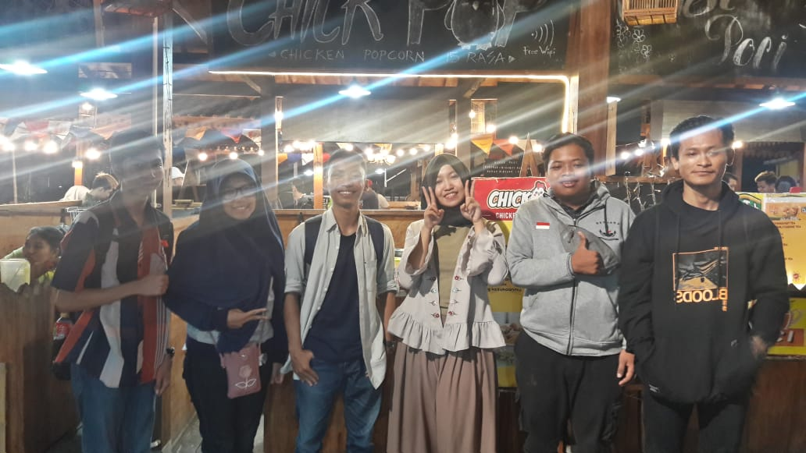
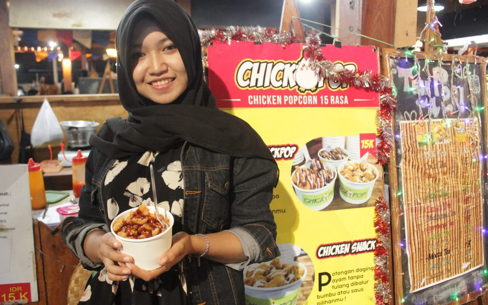

| Team Kami |
| Kami adalah Mahasiswa dari Universitas Teknologi Yogyakarta prodi Informatika S1, kami sedang melakukan kunjungan untuk wawancara kepada client suatu usaha, sebagai bentuk dari Tugas Desain web.  |
|
 Azizah Safira
Pengalaman magang yang saya miliki menjadi modal untuk berwirausaha. Meskipun terdesak masalah keluarga, Saya kini menjadi pengusaha kuliner muda semoga menjadi inspirasi bagi semuanya, satu hal dari saya yang akan selalu di ingat."Apa yang kamu tanam sekarang, itu yang akan menghasilkan nanti" selebih nya tentang saya |


 Copyright © 2018 |